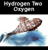
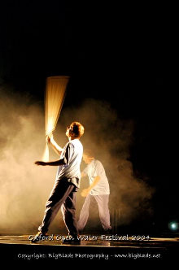

Skip Navigation | Home | Contact | Picture Gallery | Projects
 |
 |
 |  |
 |
 |
 |
 |
 |

Hydrogen Two Oxygen
The outdoor premiere of Hydrogen Two Oxygen was performed by the OOMF! Ensemble with singers and mass choir on Saturday 26th June 2004 in Oxpens Meadow by the Oxford Ice Rink. It was followed in the late evening by a spectacular performance in which the music and narrative were illustrated by a spectacle of light and fire effects.
Hydrogen Two Oxygen was commissioned by Produced with OOMF! with music by Oxford-based composer Nick Bicât , the music follows the path of water through the human and geographical cycle. It was performed by the OOMF! Ensemble with award-winning French company Au Cul du Loup and their water themed objects and musical instruments 'in-eau-sense,' with fire images by paBoom.
Composer . . . . . . . . . . . . . . . . Nick Bicât
Lyrics . . . . . . . . . . . . . . . . . . . Tony Bicât
Guest Artists . . . . . . . . . . Au Cul du Loup
('In-eau-sense objects' performed by Dominique Montain, Henri Ogier, Quentin Ogier)
Sound objects Design and copyright Henri Ogier
. . . . . . . . . . . . . . . . . . . OOMF! Ensemble
. . . . . . . . . . . . . . . . . . . . . . . . . . paBoom
Producer . . . . . . . . . Rosemary Richards
Executive Producer . . . . . . . Tish Francis
Artistic Director . . . . . . . . Jeremy James
Creative Consultant . . . . . Mark Murphy
Creative Co-ordinator . . . Aurelian Koch
Musicians Co-ordinator . . . . . . Tim Hand
PR and Community . . . . . . . . . Sue Evans
The Au Dul Du Loup In-eau-sense objects
Inspiration:
French company Au Cul du Loup describes its work not only as physical theatre, but as "theatre of objects and musical images", a unique style of performance, inspired by music, song, dance, theatre and visual arts...
Based on an interdependence of sound and movement, they present a staged series of images in sound, choreography and compositions in which each gesture, each movement directly affects the evolution of the musical event.
No Scenery
The manner in which each resonant object is manipulated becomes identifiable, evoking meaning and provoking action in the same way as do the actors' performances. These manipulations become text - in effect, sources of both the theatrical and musical composition.
Sound and Sense
"I built instruments from raw materials and carefully shifted for each one the point of access to its sonority" says Henri Ogier. "Their shape is linked directly to the dual need of making both sense and sounds; they often either belong to the labour world (presses, flails, canes) or the play world (hoops, golf clubs, tops). The human voice links the dramatic situations and the musical composition." Henri Ogier Monsoon.
In 2002, Au cul du Loup compagny performed Monsoon in the Edinburgh Fringe festival and won the Fringe First and Herald Angel Awards.
Contact for Au Cul du Loup: Cécile Mangin. 00 33 1 46 06 04 99
cecile.mangin@wanadoo.fr Au Cul du Loup Website